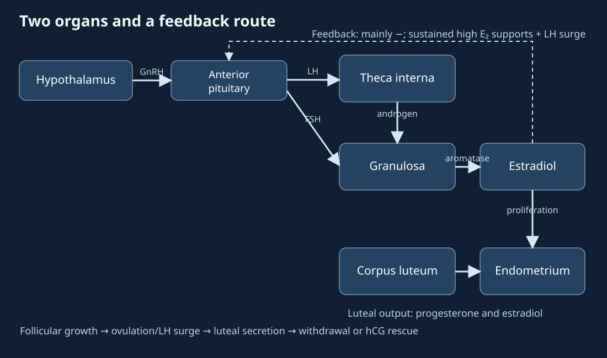
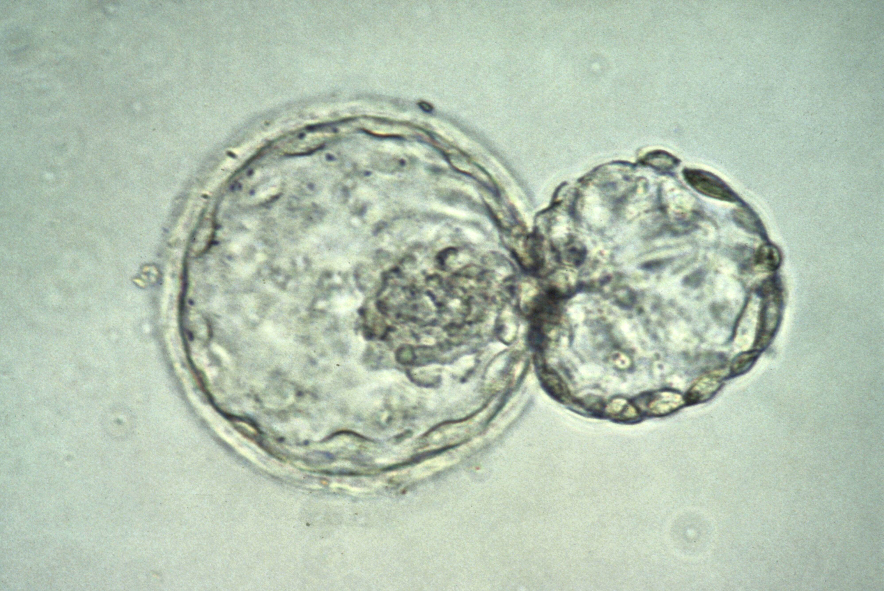
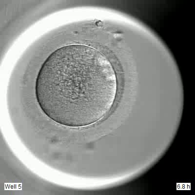
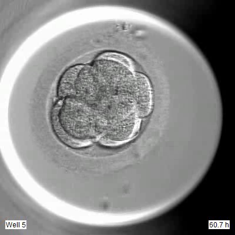
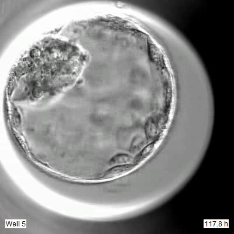
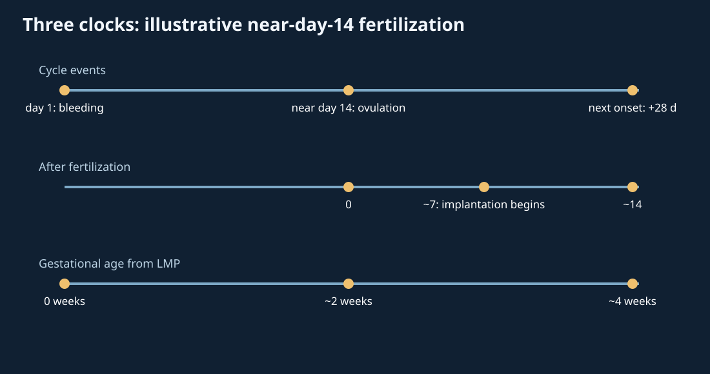

20. Menstrual regulation, fertilization and pregnancy
A urine test is negative on the day an expected period fails to arrive. Does that prove fertilization never occurred? No: ovulation may have occurred later than an idealized calendar predicts, implantation must precede substantial trophoblast secretion of human chorionic gonadotropin, and the assay has a detection threshold. The answer requires three clocks and several different tissues, not a single line labeled “pregnancy.”
This chapter follows an illustrative ovulatory cycle through the possibility of fertilization, implantation, placental support and delivery. Its persistent objects are an ovarian follicle/corpus luteum, an oocyte/embryo, the uterine endometrium, and maternal and fetal circulations. A hormone is a signal between these objects, not an arrow that turns one object into another. The chapter explains timing and mechanism; it cannot predict an individual cycle, determine a pregnancy from symptoms alone, or select a delivery route.
Lecture spine: official L46–47, with all 36 assigned topics and closing activities. Captions and sampled slides contain contradictory cycle lengths, a whole-number luteal rule, premature hCG secretion, exclusive fertilization location, and clinical timing errors. Corrections are integrated beside the relevant mechanisms. The original controls are teaching constructions. A CC BY 4.0 human blastocyst light micrograph and a CC0 term-placenta micrograph supply limited morphological reference; neither is a live process or kinetic measurement.
20.1 Two coupled cycles, one variable timeline L46 01:17
The menstrual cycle is conventionally counted from the first day of menstrual bleeding, called cycle day 1, to the day before the next bleeding begins. Ovarian events and uterine events run together but occur in different organs. In the ovarian follicular phase, several already-growing follicles respond to hormonal support and one often becomes dominant; the luteal phase follows ovulation, when the ruptured follicle becomes a corpus luteum. In the uterus, the superficial endometrial functionalis sheds, regenerates and then differentiates into a secretory lining. Endometrium means the uterine mucosa; the entire uterus does not grow and shed every month.
A 28-day cycle with ovulation near day 14 is a useful worked coordinate system. It is not a definition of normal timing. The lecture first calls the whole cycle about 21 days, then presents 28 days and an “always 14 days” luteal phase. The clinically useful distinction is that follicular timing is particularly variable and luteal duration is less variable, while neither has an exact invariant length. If ovulation occurs on day 18 in a 32-day cycle, that observation does not imply that a different oocyte took exactly 14 days to enter the tube. The duration must be measured or estimated with uncertainty. Chapter 19 distinguishes the months-long history of a follicle from this within-cycle selection: follicle-stimulating hormone (FSH) does not create a primordial follicle on cycle day 1.
Let \(d\) be cycle day, measured in days from first bleeding with \(d=1\) on that day; let \(d_o\) be the observed or hypothesized ovulation day. The illustrative postovulatory coordinate is \(\tau=d-d_o\), in days, with \(\tau=0\) at ovulation. The relation merely converts a chosen calendar; it does not estimate \(d_o\) from \(d\). In the model cycle \(d_o=14\), day 21 is \(\tau=7\); if \(d_o=18\), the same day is \(\tau=3\). A hormone concentration measured on calendar day 21 therefore samples a different luteal age in those two cases. This is why one calendar-day blood test cannot be interpreted without cycle context.
Who secretes what, and where it acts L46 05:39
Gonadotropin-releasing hormone (GnRH) is released in pulses from hypothalamic neurons into the hypophyseal portal circulation. It reaches gonadotropes in the anterior pituitary, which secrete FSH and luteinizing hormone (LH) into systemic blood. The caption at 09:39 briefly relocates GnRH production to the pituitary; the accompanying route slide and established anatomy place production in the hypothalamus. GnRH is a regulatory signal, not the chemical precursor from which FSH and LH are synthesized. Pulse pattern and pituitary state affect the response; none of the curves in the lecture specifies a measured concentration or unit.
Within a growing ovarian follicle, an inner granulosa layer surrounds the oocyte and an outer vascular theca interna supplies steroid precursors. LH supports androgen synthesis, including androstenedione, in theca cells. Androgen can cross the basement-membrane boundary to granulosa cells. FSH supports granulosa aromatase activity: testosterone can be aromatized to estradiol, while androstenedione is aromatized to estrone, which can then be converted to estradiol by 17β-hydroxysteroid dehydrogenase. The simplified pathway therefore has an explicit precursor and enzyme sequence rather than a direct androstenedione-to-estradiol aromatase step. This is the two-cell, two-gonadotropin account: cell identity and membrane crossing are part of the explanation. Saying simply that “LH makes estrogen” erases the enzymatic and spatial steps. It also does not describe all steroidogenic regulation in every follicle stage; see the Endotext ovarian morphology account (search excerpt checked; full page challenged on this pass).
Estradiol is the major estrogen represented in the growing-follicle diagram. It promotes endometrial proliferation and, together with inhibin from granulosa cells, often suppresses pituitary FSH output during much of the follicular phase. Suppression is a graded change, not absolute shutdown. After sustained high estradiol exposure in the appropriate late-follicular context, feedback becomes positive and a prominent LH surge occurs, accompanied by a smaller FSH surge. This cannot be reproduced by a context-free scalar threshold; time of exposure and altered hypothalamic/pituitary responsiveness matter. Inhibin contributes to restraining FSH, but the difference between LH and FSH surge size is not a one-factor experiment in the lecture. The Endotext GnRH review describes the biphasic feedback and species-dependent mechanistic uncertainty; its search excerpts, rather than full text, were accessible here.
The LH surge supports resumption and completion of oocyte meiosis I, ovulation and luteinization. “36 hours before ovulation” is an approximate relation whose zero point may be surge onset or peak; the lecture does not define which. The ovulated cell is normally a secondary oocyte arrested in meiosis II, surrounded by cumulus cells, not a completely finished ovum. Luteinization converts surviving granulosa and theca cells into luteal cell populations. The corpus luteum produces progesterone and estradiol. The caption's “no more granulosa cells” at 21:19 is a category mistake: their identity changes, not their material existence.
Progesterone promotes secretory differentiation of an estradiol-primed endometrium. Glands, stromal cells and uterine blood supply change; the physiology is not merely an ever-thicker wall. A secondary mid-luteal estradiol rise can accompany luteal secretion. If luteal support wanes without an established pregnancy, circulating progesterone and estradiol fall, and the functionalis breaks down and is shed. Concentrations decline; they do not become literally zero. Bleeding is not uniformly heavy for seven days. If pregnancy is established, trophoblast-derived hCG can rescue the corpus luteum and sustain early progesterone production. The next sections define when that source exists.

Static sequence: hypothalamic GnRH → pituitary FSH/LH → ovarian theca and granulosa; sustained estradiol supports LH surge, then corpus luteum secretes progesterone and estradiol. Withdrawal without pregnancy permits menstruation.
20.2 From two gametes to implantation L47 01:26
Fertilization is a sequence of gamete recognition, sperm–oocyte membrane fusion and oocyte activation that gives the developing embryo a paternal and a maternal genome. In typical unassisted human conception, the ampulla of a uterine tube is the usual site; it is not the only possible location in every circumstance. Chapter 19 describes the open fimbrial–ovarian spatial relation. After ovulation, the secondary oocyte generally remains fertilizable for roughly 12–24 hours. Sperm can retain fertilizing capacity for days under favorable reproductive-tract conditions. These are overlapping windows, not a 14-day wait by an ovulated oocyte or a guaranteed 48–72-hour upper bound for every sperm. Vaginal acidity, cervical mucus and tubal transport are different locations; the lecture's assertion that the uterine cavity is highly acidic collapses them. Its fixed counts of sperm reaching the egg are not used as measured constants.
Sperm undergo capacitation in the female tract, a set of functional membrane and motility changes that makes later zona interaction and acrosome response possible. A sperm traverses the cumulus, interacts with the zona pellucida (an extracellular glycoprotein coat), responds through the acrosome (a specialized organelle at its head), and reaches the oolemma, the oocyte plasma membrane. Physical interaction, molecular recognition and enzyme action all matter; one hyaluronidase does not simply dissolve every egg membrane. Chemoattraction has been observed in experimental settings but is not established by the lecture's drawing as the universal long-range steering mechanism in vivo in humans. The steps are depicted as a controlled order, not a measured movie of one human fertilization.
Fusion initiates Ca²⁺-associated activation and normally completion of the oocyte's second meiotic division, leaving a maternal haploid contribution and a second polar body. The sperm contribution is haploid. The two genomes initially occupy distinct pronuclei, so adding chromosome complements does not mean an instantly mononucleated cell. Under typical euploid conditions, \(23+23=46\) chromosomes in the resulting diploid embryonic lineage. Euploid here means the expected complete sets; chromosomal errors and nonstandard sex-chromosome patterns exist. Usually an X-bearing sperm with an X-bearing oocyte yields XX and a Y-bearing sperm yields XY. Chromosomal complement is not a complete deterministic account of gonadal development, phenotype or identity. A block to additional sperm involves cortical granule release and zona changes, with other membrane-level defenses; a drawing of a uniformly thickening shell is a simplification.
The early embryo undergoes cleavage: mitotic divisions increase cell number before large overall growth. Individual daughter cells are blastomeres. Compaction produces a morula; a fluid cavity and lineage organization produce a blastocyst with trophectoderm around an inner cell mass and a blastocoel. The first contributes trophoblast lineages, the second to the embryo proper and some extraembryonic tissues. The source calls an eight-cell cluster a morula in one place and 16–32 cells in another; use transitions rather than a rigid cell-count definition. Approximate days after fertilization describe a distribution, not an individual clock. By about the end of the first week, a competent blastocyst can hatch from the zona, appose and adhere to receptive endometrium, then invade it through trophoblast activity. It does not passively “diffuse” through a uterine wall.


Frame 0: source clock 6.8 h

Frame 330: source clock 60.7 h

Frame 664: source clock 117.8 h
Open the observed source movie in its full reference view
Open the observed source movie
20.3 Pregnancy support links two circulations without merging them L46 25:02
Following implantation, differentiating trophoblast contributes the maternal-facing interface and produces human chorionic gonadotropin (hCG). Its signaling sustains the corpus luteum during early pregnancy, preserving progesterone-rich endocrine support of the endometrium. Fertilization alone is not the hCG source for a urine test: an unimplanted early embryo has not created the mature maternal-facing trophoblast relationship that yields detectable circulating and urinary hCG. Eventually placental steroid production assumes a larger support role; the timing of the transition is gradual, not a single universal day. A nonpregnant luteal cycle instead undergoes luteolysis and steroid withdrawal. The conditional branch is established implantation and hCG signaling versus absent rescue, not merely “sperm met egg.”
The placenta is a transient organ built from fetal-derived chorionic tissue and maternal uterine tissue. In the usual hemocorial arrangement, maternal blood enters an intervillous space around branched chorionic villi. Fetal blood circulates inside capillaries within those villi, connected to the fetus by umbilical vessels. The two blood compartments are closely apposed but usually remain separate across trophoblast, interstitial and fetal endothelial structures. Oxygen and nutrients can cross toward fetal blood and carbon dioxide and waste can cross oppositely. The arrows are net exchange directions under physiological gradients, not evidence that whole maternal and fetal blood streams fuse. Immunological and endocrine interactions add complexity beyond this transport sketch. The source lecture says the baby develops “inside the placenta”; the fetus develops within the uterine gestational compartment and connects to the placenta via the cord.

Figure 20.4a. Whole unchanged source gross placental surface plate. A shows fetal-side cord insertion and vessel branching; B shows maternal-side lobulation. These surface photographs do not reconstruct uterine attachment, maternal blood entry or full placental perfusion.
Individual donor health, age, exact gestational week, fixation, delivery method and delivery-to-photo interval are unreported. “At term” is the authors’ assignment. The two views are not a documented registered case pair. Neither the instrument nor the cloth grid is a calibrated ruler; no new scale is added. Colour is not a perfusion or oxygenation measurement.
Quaye, Appiah, Obiri, Ahenkorah and Adu-Bonsaffoh (2026), The human placenta development and anatomy, Archives of Gynecology and Obstetrics 313:234, whole Figure 6. © Authors; CC BY-NC-ND 4.0. This noncommercial educational component reproduces the complete source figure without modification. No crop, new leader, retouch, colour change, segmentation or animation. Separate page text is a source key; the image is not relicensed. Source/extraction and reuse record · Reproduction record.
The independent light micrograph in Figure 20.4b is a term chorionic villus, a late-pregnancy H&E histological preparation, not an image of implantation week. Its pink and purple colors arise from stain; the image's labels identify maternal red cells outside a villus and fetal red cells inside a capillary. It supports a spatial separation at one section, not a proof that no cells ever cross, nor any flux coefficient or transport kinetics. Reconstructing first-week implantation from this term specimen would be a developmental-stage error. The morphology and public license were checked on the owning Commons file page; source-page information gives no scale bar in the supplied panel, so dimensions are not measured.


| Chosen example | Maternal / fetal mmHg | J* | Q* at phase 0 / 0.5 / 1 | Net drive |
|---|---|---|---|---|
| O₂ | 50 / 25 | +0.25 | 0 / +0.125 / +0.25 | Toward fetus |
| CO₂ | 40 / 45 | −0.05 | 0 / −0.025 / −0.05 | Toward mother |
| Either: equal | 40 / 40 | 0 | 0 / 0 / 0 | Zero net; molecular motion persists |
| O₂: reversed | 25 / 50 | −0.25 | 0 / −0.125 / −0.25 | Toward mother |
| CO₂: reversed | 50 / 25 | +0.25 | 0 / +0.125 / +0.25 | Toward fetus |
Open the controlled quantitative lab in its full reference view
Open the controlled quantitative lab
A conservation test for transfer across a boundary
A static villus section cannot give a transfer rate, but it can motivate a precise distinction between solute exchange and mixing of blood compartments. Consider two sealed, well-mixed teaching reservoirs separated by a membrane. Give the maternal reservoir a fixed volume \(V_m>0\) and concentration \(C_m\), and the fetal reservoir \(V_f>0\) and \(C_f\). Let an imposed nonnegative conductance \(G\) produce a transfer \(J=G(C_m-C_f)\) in solute-amount units per artificial time unit. This is a sign convention: when \(C_m>C_f\), net transfer is toward the fetal reservoir. It is not a measured placental oxygen law. Real maternal and fetal blood are continuously perfused, consume or supply solutes, and may require nonlinear transport and binding terms.
Adding the first two equations gives \(d(V_mC_m+V_fC_f)/d\tau=0\): total solute inventory is conserved in this closed example even though the concentrations change. The concentration difference obeys \(d\Delta/d\tau=-G(1/V_m+1/V_f)\Delta\), where \(\Delta=C_m-C_f\). Therefore \(\Delta(\tau)=\Delta_0e^{-G(1/V_m+1/V_f)\tau}\). For \(G=0\), neither concentration changes; for equal initial concentrations, there is no net transfer. For positive \(G\), the difference tends to zero while both volumes remain distinct. Equality of a solute concentration at equilibrium does not imply that maternal and fetal erythrocytes have crossed the barrier. The exact implementation and a nondefault example are in the chapter script. Its binary64 interface accepts finite input values only when initial and returned inventories are representable; unrepresentable derived results raise an error. Zero time or zero conductance returns the exact initial state within that domain. No fitted human value of \(G\) is implied.
20.4 Dating, testing and maternal adaptation L47 17:26
Three clocks now matter. Cycle day begins at first menstrual bleeding. Post-fertilization age begins at fertilization, which may or may not coincide with a predicted ovulation day. Gestational age is an obstetric convention usually counted from the first day of the last menstrual period (LMP), approximately two weeks before fertilization in the idealized 28-day cycle. Thus “week 4” means different things if the clock is not named. It is incorrect to treat “nine months and seven days” as a physiological gestation measured from fertilization; it is a calendar estimator from LMP. Ultrasound can establish or revise clinical dating when calendar assumptions fail.
The common 280-day estimated due date (EDD) is an arithmetic convention: \(t_{\mathrm{EDD}}=t_{\mathrm{LMP}}+280\;\mathrm{days}\). It assumes a representative cycle and approximately day-14 ovulation; due date is a point estimate, not a deadline. The source demonstrates Naegele's rule: LMP 8 May 2009 +1 calendar year −3 calendar months +7 days = 15 February 2010. Exact addition of 280 days gives 12 February 2010. The three-day difference comes from calendar-month lengths, not a biological contradiction. At the same observation date and LMP-based gestational age, later ovulation and fertilization imply a younger embryo: fewer days have elapsed since fertilization than the day-14 assumption would suggest. For example, at cycle day 21, assumed fertilization on day 14 gives seven post-fertilization days, while fertilization on day 18 gives three. The ACOG due-date method was available here as a search excerpt only; the primary page itself returned an access restriction, so its detailed redating thresholds are not reproduced.
Missing bleeding, nausea, breast tenderness and fatigue are presumptive signs: they may prompt investigation but do not uniquely diagnose pregnancy. A home urine assay detects hCG, commonly with a migrating sample and separate test and control indicators. The control confirms the device's procedural response. A visible control with no test line is a valid negative at that time and assay sensitivity; absent control is invalid even if a second mark appears. A correctly interpreted test line is usually evidence of elevated hCG, but a result is not a direct image of an embryo's location or viability. An early negative can occur when implantation and hCG rise have not yet reached detection. The FDA home-test explanation, directly read 2026-11-04, reports variable test sensitivity and false negatives on the first missed-period day; it does not promise all modalities become positive by 3–4 weeks. No clinical diagnosis or individual testing schedule is inferred from the synthetic example below.
Ultrasound images structure and location, while cardiac activity is evaluated by a technique and timing appropriate to gestational age. A handheld Doppler signal and early sonographic cardiac motion are not interchangeable observations. An hCG test's positive result alone cannot rule out ectopic implantation. The source's “4–8 week” and “10–12 week” milestones conflate instrument and clock; the chapter does not use them as universal cutoffs. In physiological pregnancy, maternal blood volume/cardiac output, ventilation and renal handling change along with endocrine, breast and uterine states. These are overlapping adaptations with individual variation, not evidence that the bladder itself simply grows uniformly. Nutrient requirements change, but a lecture inventory of iron, folate, water and oxygen is not a dose prescription.
A minimal threshold model makes the test logic explicit. Let \(H(t)\) be urinary hCG concentration at collection time \(t\), \(H_{\min}>0\) the device's detection threshold in the same units, and \(C\in\{0,1\}\) the control-line validity indicator. Let \(T=1\) if \(H(t)\ge H_{\min}\) under valid operation and \(T=0\) otherwise. The result is invalid when \(C=0\), positive when \(C=1,T=1\), and negative when \(C=1,T=0\). This is a logic model; real assays have errors, thresholds vary by product, and urine dilution, timing and handling matter. A false negative under an actual pregnancy is possible if \(H(t)<H_{\min}\). A missing control is not a biological negative.

20.5 Late pregnancy, labor and routes of birth L47 20:56
The conventional three trimesters group a continuous gestation into broad planning intervals. Early development includes organ-system formation; later fetal growth and maturation do not make every organ “fully formed” at one stated week. Maternal symptoms and fetal movement have variable onset and perception. A head-down, or cephalic, presentation is common near birth, but position does not follow from an alleged decrease in head weight. The lecture calls 37 weeks “full term.” Current NICHD terminology defines 37–38 weeks and 6 days as early term and 39–40 weeks and 6 days as full term; these are gestational ages, not post-fertilization ages. The NICHD one-page definitions were directly read 2026-11-04. The chapter does not turn an average milestone into a promised outcome for a particular pregnancy.
Labor is a coordinated process involving uterine contractions, cervical remodeling and fetal passage, with variable order and duration. Effacement is thinning/shortening of the cervix; dilation is widening of its opening. They are related but distinct measurements. The first stage reaches complete dilation conventionally near 10 cm, after which the second stage includes birth of the infant. The third stage is placental separation and delivery. The caption's “more than 10 to 15 cm” is not a standard target. NICHD's labor stages page, directly read 2026-11-04, defines these events; its indicative durations do not apply to every birth.
Oxytocin can strengthen uterine contractions, and prostaglandins contribute to contractions and cervical ripening. Estrogen-sensitive receptor and tissue states can modify responsiveness. Placental corticotropin-releasing hormone and relaxin are part of a broader human pregnancy signaling system; drawing them as a deterministic four-step “labor start” chain would exceed the lecture's evidence. The fetoplacental endocrine system, maternal myometrium and cervix are distinct compartments. A feedback picture can show contraction-associated signaling without pretending to predict spontaneous labor onset.
Vaginal birth traverses the cervix and vagina. Cesarean birth requires incisions through the abdominal wall and uterine wall to deliver the infant, followed by placental delivery and closure. A prior cesarean, breech presentation, multiple gestation or medical condition may change options; none alone automatically determines one route for every patient. Delivery route follows clinical circumstances, not a blanket “equally safe” claim. The source's fixed 24–48-hour labor, 30–60-minute operation and recovery times are omitted because they combine heterogeneous cases and undefined endpoints. The transcript's claim that retained placental fragments generally form a uterine tumor is unsupported; retained tissue is clinically important because of bleeding and infection risks. Newborn head molding can persist for days and cannot be guaranteed to resolve in 30–40 minutes. This section states physiology and decision boundaries, not procedural instructions.

The two images have different framing and are not registered. Their exact elapsed interval is unreported. Do not read a continuous head trajectory, contraction sequence, cervical-dilation movie or pressure measurement into the comparison. There is no source scale bar.
Prelabor MRI was performed at 36–39 gestational weeks; the second-stage cohort was beyond 39 weeks, with full dilation clinically confirmed and imaging within 10 minutes before expulsive efforts. Participants were at rest during acquisition. The study used a 1 T open Philips Panorama scanner without contrast; the caption does not uniquely assign a listed sequence to this exported pair.
The study included 27 prelabor scans and seven second-stage scans, with five uninstrumented vaginal births and two emergency Caesareans. This one paired case does not establish a universal uncomplicated birth course, clinical prognosis or placental delivery.
Ami et al. (2019), Three-dimensional magnetic resonance imaging of fetal head molding and brain shape changes during the second stage of labor, PLOS ONE 14:e0215721, Figure 3, patient 5. © Authors; CC BY 4.0. Whole original publication JPEG extracted unchanged from the source PDF; no crop, retouch, new leader or scale. Source and extraction record · Reproduction record.
The final L46 prompt asks for typical cycle duration, corpus-luteum role and the cycle's importance. The exact 28-day number is a model, the luteum is an endocrine organ formed after ovulation, and the cycle coordinates follicle selection, uterine receptivity and periodic shedding. The five L47 prompts ask for the usual fertilization site (tubal ampulla), implantation (active blastocyst–endometrium attachment/invasion), development in the uterus (gestation), the final phase (third trimester, followed by labor/birth), and colostrum. Colostrum is the early mammary secretion around birth, rich in immune components; Chapter 19 distinguishes milk synthesis from oxytocin-driven ejection. It is not made by the placenta and is a deliberate bridge between the two chapters.
20.6 Exercises and worked solutions
- Three clocks. In an illustrative 28-day cycle, ovulation and fertilization occur on cycle day 14. What are cycle day, post-fertilization age and LMP-based gestational age seven days later? State the assumption needed to call it “three weeks pregnant.”
Worked solution
Cycle day is 21. Post-fertilization age is seven days. With cycle day 1 at LMP onset, 20 elapsed days have passed by cycle day 21, or 2 weeks 6 days of gestational age; colloquially “about three weeks.” The calculation assumes ovulation/fertilization on the chosen day, an accurately known LMP, and no clinical redating. It does not make the day-21 embryo a three-week-old embryo.
- Two-cell steroidogenesis. A diagram shows LH receptor activation on a theca interna cell and FSH receptor activation on a granulosa cell. Trace an androgen precursor to estradiol and identify the compartment crossing. Explain why blocking granulosa aromatase would alter estradiol output without implying theca cells stopped making precursor.
Worked solution
LH supports theca androgen synthesis. Androstenedione crosses toward the adjacent granulosa compartment. In granulosa cells, aromatase converts androstenedione to estrone; 17β-hydroxysteroid dehydrogenase can convert estrone to estradiol. Alternatively, testosterone can be aromatized directly to estradiol. FSH supports granulosa aromatase expression and activity. Aromatase blockade removes a conversion step downstream of theca production. Precursor production and estradiol concentration may change through feedback, but the direct blockage alone does not show zero theca synthesis. Both blood hormones and the local cell boundary are necessary in the explanation.
- Pronuclei and DNA. A typical secondary oocyte has completed meiosis I and retains a haploid chromosome set of replicated chromosomes. Describe the maternal and paternal genome states after sperm fusion but before first embryonic DNA replication. Why is “one mononucleated 46-chromosome cell immediately at membrane fusion” misleading?
Worked solution
Oocyte activation permits completion of meiosis II, leaving an unreplicated maternal haploid product; sperm contributes an unreplicated paternal haploid set. The total is usually 23 + 23 = 46 chromosomes and 2C DNA before the next replication, while separate maternal and paternal pronuclei can still be present. Membrane fusion, meiotic completion, pronuclear formation and later nuclear/cell-cycle events are sequential. Counting the total genomic complement does not assert that one nucleus existed at the instant of fusion.
- Test-state logic. A hypothetical kit has \(H_{\min}=20\) arbitrary concentration units and correct operation. Evaluate samples with \(H=12\) and \(H=26\), then evaluate a third sample with \(H=26\) but no control line. Explain what can be concluded about an actual pregnancy from the first result.
Worked solution
With control \(C=1\), \(12<20\) yields a valid negative and \(26\ge20\) a valid positive. The third is invalid because \(C=0\), regardless of apparent hCG or a test mark. A valid negative means this kit did not detect hCG above its threshold in this urine at this time; it does not establish that fertilization, implantation or pregnancy is impossible. The units and numbers are synthetic, not a real device specification.
- Due-date arithmetic. Apply the exact 280-day convention and the calendar Naegele construction to LMP 8 May 2009. Give both outputs and the source of disagreement, without claiming one date predicts a birth.
Worked solution
Adding 280 days gives 12 February 2010. Adding one calendar year gives 8 May 2010; subtracting three calendar months gives 8 February 2010; adding seven days gives 15 February 2010. The calendar-month lengths create a three-day discrepancy in this case. Both are estimates under idealized ovulation assumptions. The executable check in Chapter 20 timeline code reproduces the two dates; clinical dating may be revised by ultrasound.
- Exchange versus mixing. In a term-villus section, maternal red cells are outside a chorionic villus and fetal red cells lie in its capillary. Draw a route for oxygen and one for carbon dioxide, and decide whether the photo proves that whole blood mixes or that a specific transport rate is known. Name a reason the image cannot directly represent implantation. In the artificial sealed-reservoir model with \(V_m=3\), \(V_f=1\), \(C_m(0)=1\), \(C_f(0)=0\), \(G=0.2\) and \(\tau=5\), compute the remaining concentration difference and check total inventory.
Worked solution
Oxygen moves in net from maternal intervillous blood across villous tissue toward fetal capillary blood; carbon dioxide generally moves in the reverse net direction. Exchange of solutes/gases across a boundary does not require red-cell or bulk-blood mixing. A stained fixed section at one instant cannot measure flux. It is from a term placenta, whereas implantation begins near the end of the first post-fertilization week in a radically different tissue state; applying the mature villous geometry to that event would be a stage error. For the artificial closed example, \(M=3(1)+1(0)=3\) is conserved. The difference is \(\Delta(5)=e^{-0.2(1/3+1)5}=e^{-4/3}\approx0.264\). Its common equilibrium concentration is \(M/(3+1)=0.75\). Hence \(C_m(5)=0.75+(1/4)e^{-4/3}\approx0.816\) and \(C_f(5)=0.75-(3/4)e^{-4/3}\approx0.552\). Checking \(3C_m+C_f=3\) closes the balance. The change transfers solute through a membrane in an artificial unperfused system; no blood reservoir or red cell crosses into the other.
20.7 Sources and evidence limits
The official NPTEL course supplies L46–47 topic order and navigation, not independent verification of its disputed physiology. The available text is publisher captions, and the visual audit inspected 129 sampled stills plus 29 native reopens across seven sheets; neither is a continuous audio/video review. Source disagreements are described in the exposition and the private source handoff.
Mechanistic and clinical checks are linked at point of use. Directly read owning pages in this authoring pass (2026-11-04) include the FDA home-test explanation, NICHD labor stages, NICHD term definitions, and both blastocyst and villus image records. The placental anatomy consensus full-text XML was read through Europe PMC for the term attachment and vessel-topology exposition; the gross surface plate in Figure 20.4a does not directly show those connections; the PMC landing page itself was challenged. Search excerpts but not complete full text were available for the Endotext menstrual cycle, ovarian morphology, GnRH physiology, placental circulation, and ACOG due-date sources; full pages returned a challenge or restriction. A final scientific review should independently inspect owning full texts for fine mechanisms and any current clinical claim. The new controlled gas-exercise inputs are synthetic, not measured patient values. The independent IVF movie retains published specimen/source-clock limits; paired labor MRI remains two unregistered observations, not a continuous birth animation. Neither supplies a measured transit rate or a complete mechanism for implantation or birth.
Observed/reference updates on 9 November 2026 use separately credited native primary/owning-source images and movies, including an unchanged whole CC BY-NC-ND gross photograph and separate CC BY MRI research cases, with source-specific preparation, rights and timing limits at each figure. The new quantitative labs preserve their declared synthetic assumptions; they are not anatomical measurements or patient predictions. The historical 4 November checks and earlier visual-review records remain bound to their original artifacts. A regional image does not demonstrate unrelated biological mechanisms.